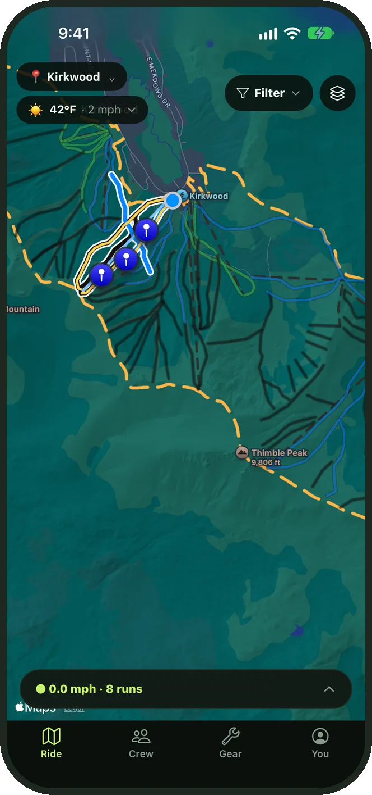
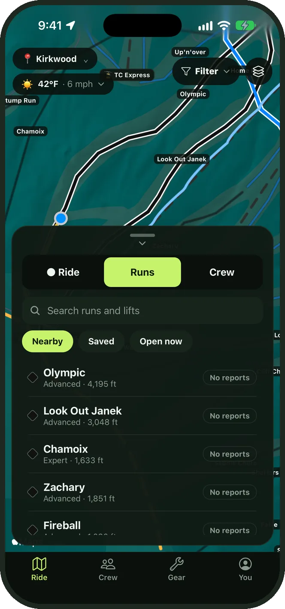
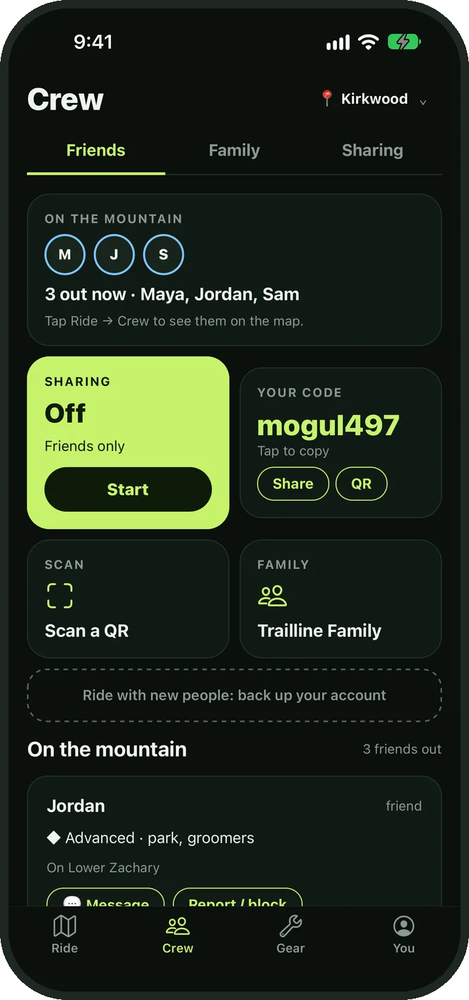
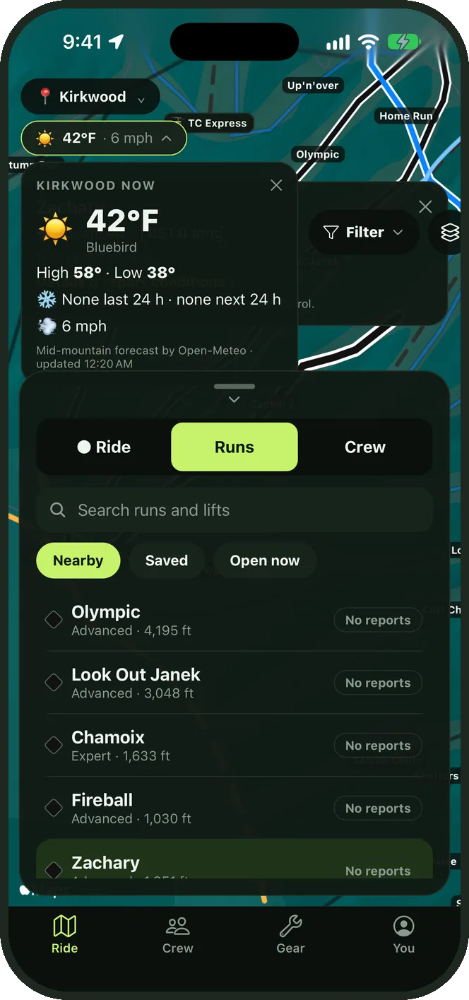
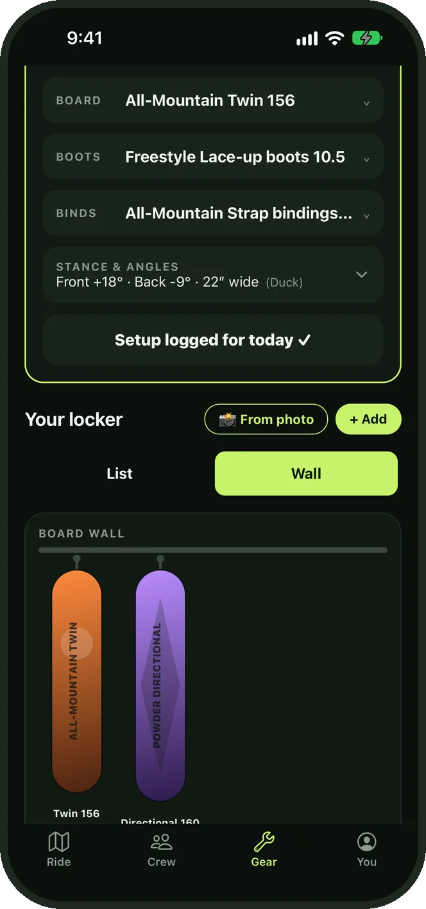
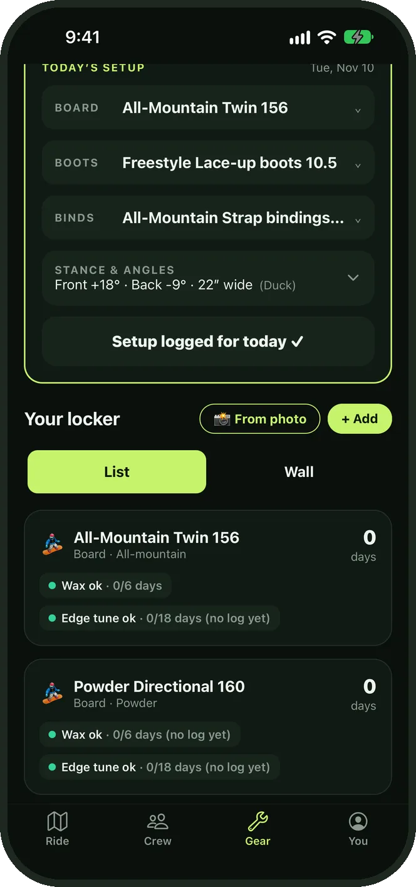
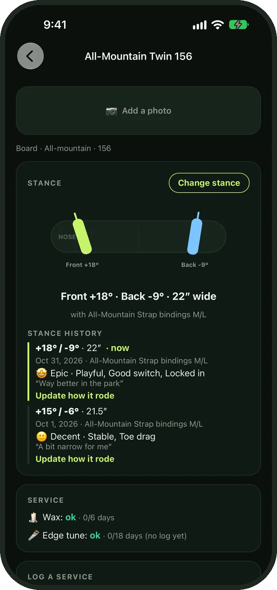

Ski & snowboard tracker
Your day draws itself on the resort map as you ride. See what's open, check the snow and find your crew on the hill.
Free for iPhone · Heavenly · Kirkwood · Northstar · Snowbird

Big buttons for gloves, auto-pause when you stop, and no account to set up before first chair.
See it in action
A real day at Kirkwood, start to finish. Tap a chapter to jump to it.






Take the tour
Tap Start and put your phone away. Trailline knows when you're on a lift and when you're riding, and lights up each trail as you go.
Every run and lift with its difficulty and length, plus what riders are reporting right now: groomed, icy, powder, closed.
Add friends with a short code you can shout across a lift line, or a QR. See who's out, where they are and which lift they're heading to.
Mid-mountain conditions in one tap: temperature, highs and lows, wind, how much snow fell overnight and what's coming.
Log the board, boots and bindings you rode, your stance angles and how it felt. Find the nearest tune shop when your edges need help.
Your boards hang on a wall, with boots and bindings on shelves.
Trailline is built to collect as little as possible. Here's the short version.
Full GPS tracks, your body stats, gear and history never leave your device.
Only friends and family see where you are, and shared locations expire within 12 hours.
We don't sell data, show ads or use third-party analytics.
Kids' accounts are made by a parent, visible only to family, and can't be found by strangers.
An account is created on your phone. Back it up with Sign in with Apple only if you want to.
You → Account → Delete account removes your server data for good.
Trailline is almost ready for the App Store. Questions or ideas in the meantime? We'd love to hear them.
Trailline is a tracking and social app, not a safety device. Always obey posted signs, closures and ski patrol.